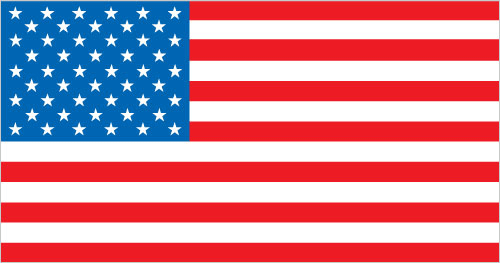
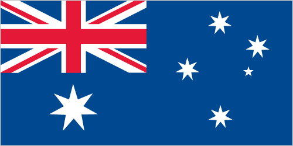

| Country | Continent | Capital |
|---|---|---|
| Egypt | Africa | Cairo |
| Saudi Arabia | Asia | Riyadh |
| France | Europe | Paris |
| United States | North America | Washington, D.C. |
| Brazil | South America | Brasília |
| Australia | Australia | Canberra |
Egypt
Egypt,[e] officially the Arab Republic of Egypt, is a country spanning the northeast corner of Africa and southwest corner of Asia via the Sinai Peninsula
Saudi Arabia
Saudi Arabia,[e] officially the Kingdom of Saudi Arabia, is a country located in the Middle East on the Arabian Peninsula, bordered by the Red Sea to the west and the Arabian Gulf to the east.

France
France,[e] officially the French Republic, is a country located in Western Europe, with overseas regions and territories, and is bordered by the Atlantic Ocean and the Mediterranean Sea.

USA
United States,[e] officially the United States of America, is a country primarily located in North America, bordered by Canada to the north and Mexico to the south.

Brazil
Brazil,[e] officially the Federative Republic of Brazil, is the largest country in South America, known for the Amazon Rainforest and its extensive Atlantic coastline.

Australia
Australia,[e] officially the Commonwealth of Australia, is a country and continent located in the Southern Hemisphere, surrounded by the Indian Ocean and the Pacific Ocean.
